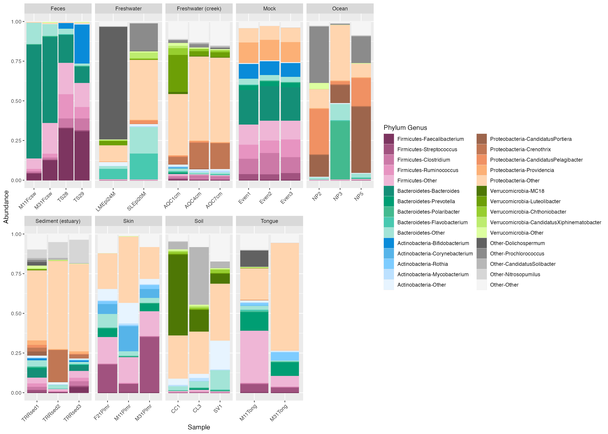
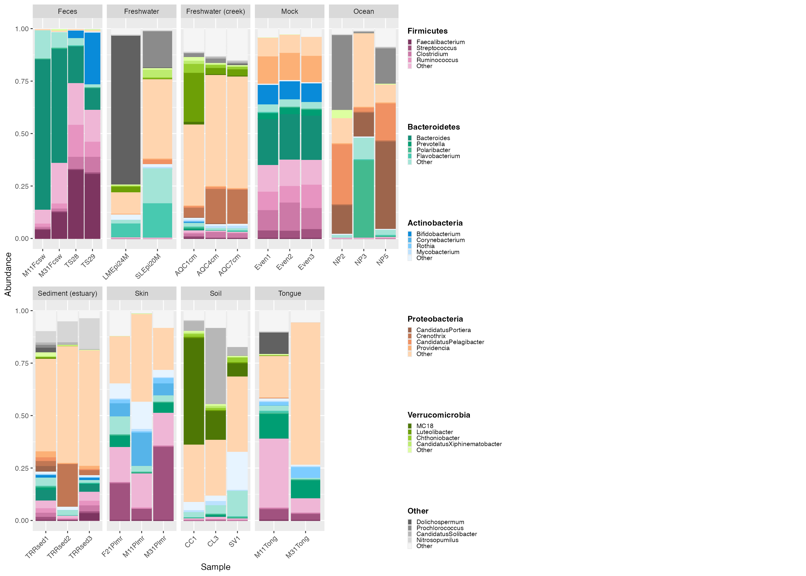
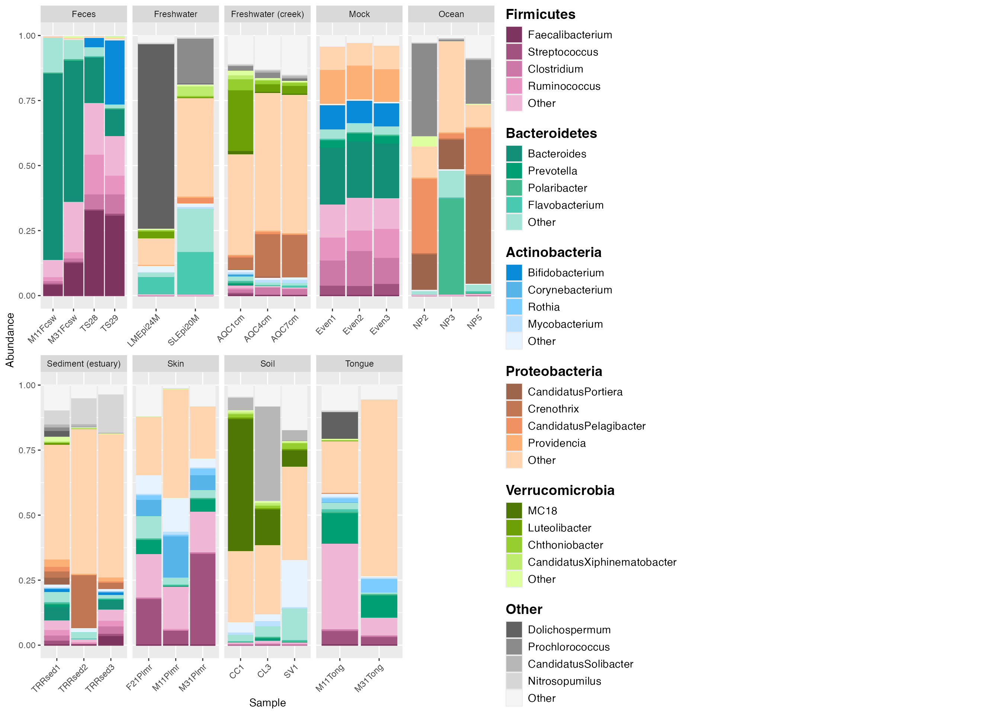
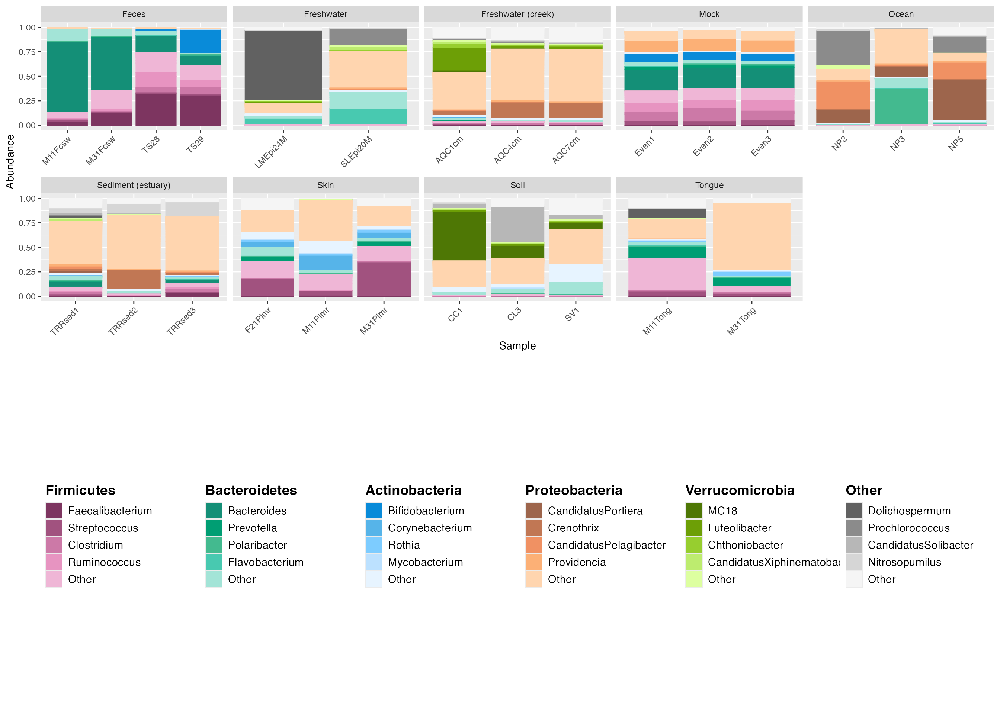
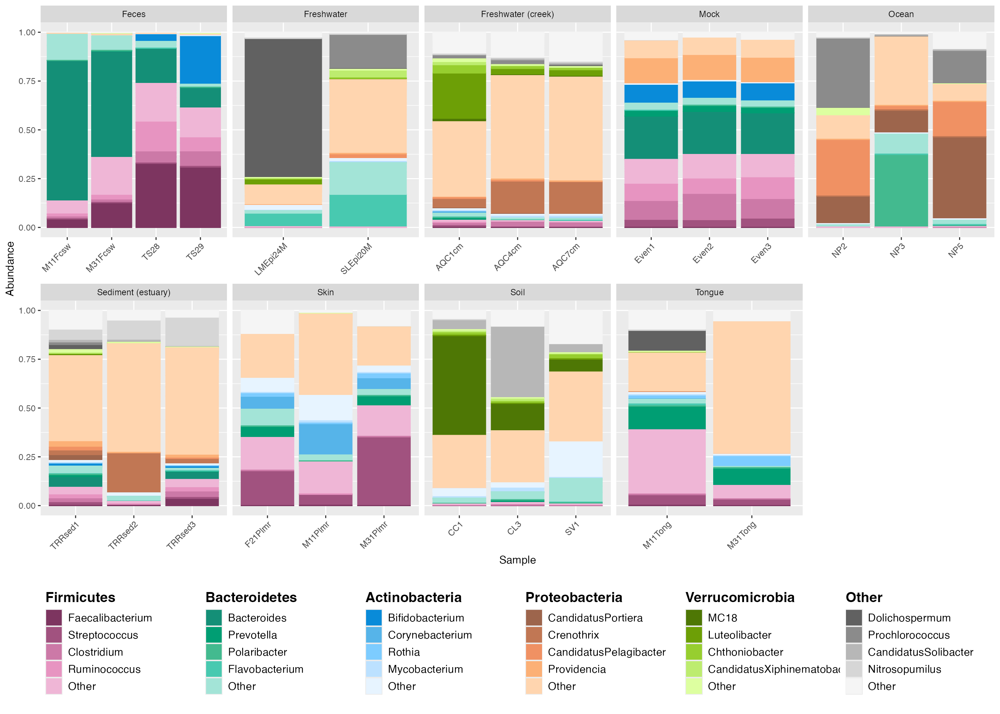
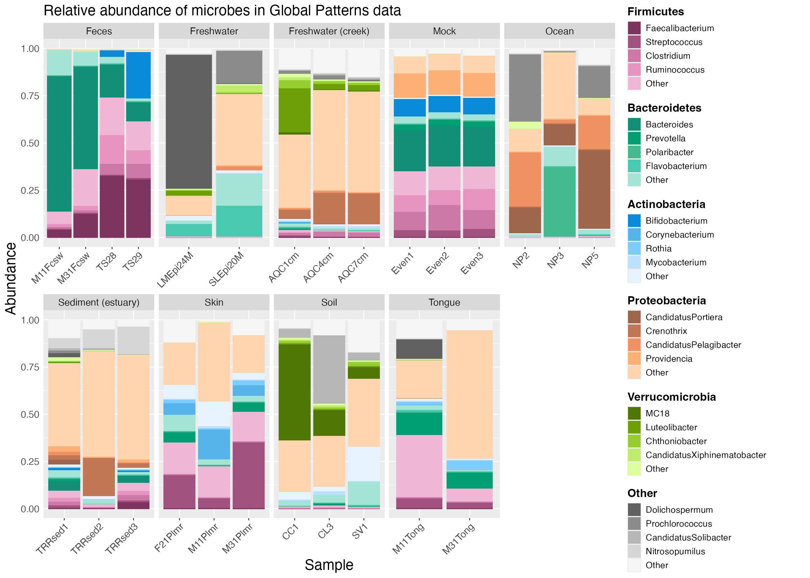

vignettes/microshades-legend_customization.Rmd
microshades-legend_customization.RmdThis tutorial is a shortened version of the Global
Patterns tutorial, and focuses on how to customize your figures
using the custom_legend() function from the microshades
package created by the Karstens Lab.
For this tutorial, we will be using the Global Patterns microbiome data available from phyloseq, which includes water, land, and human samples. Additionally we use the package speedyseq to improve the speed of phyloseq’s plotting and taxonomic merging functions.
To cite microshades: Dahl EM, Neer E, Bowie KR, Leung ET, Karstens L. 2022. microshades: An R Package for Improving Color Accessibility and Organization of Microbiome Data. Microbiol Resour Announc 11:e00795-22. https://doi.org/10.1128/mra.00795-22
# load the Global Patterns dataset, which is a phyloseq object available from the Phyloseq package.
data("GlobalPatterns")
GlobalPatterns## phyloseq-class experiment-level object
## otu_table() OTU Table: [ 19216 taxa and 26 samples ]
## sample_data() Sample Data: [ 26 samples by 7 sample variables ]
## tax_table() Taxonomy Table: [ 19216 taxa by 7 taxonomic ranks ]
## phy_tree() Phylogenetic Tree: [ 19216 tips and 19215 internal nodes ]
# Agglomerate and normalize the phyloseq object, and melt to a dataframe.
mdf_prep <- prep_mdf(GlobalPatterns, remove_na = TRUE)
# Generate a color object for the specified data
color_objs_GP <- create_color_dfs(mdf_prep, selected_groups = c("Verrucomicrobia", "Proteobacteria", "Actinobacteria", "Bacteroidetes", "Firmicutes"), cvd = TRUE)
# Extract
mdf_GP <- color_objs_GP$mdf
cdf_GP <- color_objs_GP$cdfWith microshades, the mdf object (mdf_GP in the example) contains the data to plot and the cdf object (cdf_GP in the example) is used for the color assignments.
The plot_microshades function returns a ggplot object,
which allows for additional specifications for the plot to be declared,
such as faceting by sample type as in the example below.
plot <- plot_microshades(mdf_GP, cdf_GP)
plot_default <- plot +
facet_wrap(~SampleType, scales="free_x", nrow=2)
plot_default
The default legend in microshades is not necessarily ideal for
publication or presentations. To make an improved legend, you can use
the custom_legend microshade function. This function needs
to be used with plot_grid from the cowplot package to output the
plot and custom legend together.
# create the custom legend
legend_1 <- custom_legend(mdf_GP, cdf_GP)
# plot using the custom legend
plot_1 <- plot +
theme(legend.position="none") + # removes the original legend.
facet_wrap(~SampleType, scales="free_x", nrow=2)
# output the plot and custom legend
plot_grid(plot_1, legend_1) 
The legend is small and texts are difficult to view. We can specify
the parameters for legend_key_size and
legend_text_size to modify the legend.
# create the custom legend
legend_2 <- custom_legend(mdf_GP, cdf_GP, legend_key_size = 1.2, legend_text_size = 14) # adjust size with legend_key_size and texts with legend_text_size.
# plot using the custom legend
plot_2 <- plot +
theme(legend.position="none") +
facet_wrap(~SampleType, scales="free_x", nrow=2)
# output the plot and custom legend
plot_grid(plot_2, legend_2) 
Sometimes it makes sense to lay out the legend under the plot instead
of on the right side. This is easily achieved by adjusting the code in
the custom_legend and plot_grid functions.
First, create a custom legend object with the
legend_orientation set to “horizontal”.
Then, use the plot_grid function with NULL and legend_3
as parameters to set the legend in the center position. By plotting NULL
and the custom legend in one row with relative widths of 0.04 (NULL) and
0.96 (legend), we allow for some padding on the left of the legend so
that it appears in the center of the output.
Lastly, use the plot_grid function again, but this time
to output the plot and the centered legend together.
legend_3 <- custom_legend(mdf_GP, cdf_GP, legend_key_size = 1.2, legend_text_size = 14, legend_orientation = "horizontal") # set the legend_orientation to "horizontal" to align legend horizontally.The default is vertical.
center_legend_3 <- plot_grid(NULL, legend_3, nrow=1, rel_widths=c(0.04, 0.96)) # The rel_widths centers the legend. nrow = 1 places the legend and null space on the same level.
plot_grid(plot_2, center_legend_3, nrow=2) # The parameter nrow=2 aligns the legend to be below the plot. 
To make the plot larger than the legend, adjust the relative sizing
of the plot and the legend with the plot_grid options
rel_widths and rel_heights.
legend_4 <- custom_legend(mdf_GP, cdf_GP, legend_key_size = 1.2, legend_text_size = 14, legend_orientation = "horizontal")
center_legend_4 <- plot_grid(NULL, legend_4, nrow=1, rel_widths=c(0.04, 0.96))
plot_grid(plot_2, center_legend_4, nrow=2, rel_widths = c(1, 1), rel_heights = c(1, .25)) # The rel_widths and rel_heights option allows you to specify the relative sizing of the plot and legend. 
Creating plots in R has a benefit of ensuring reproducibility and also enables customization. Here, we demonstrate how to make some common adjustments, such as adding titles and changing font color.
# create the custom legend
legend_5 <- custom_legend(mdf_GP, cdf_GP, legend_key_size = 1.2, legend_text_size = 14)
# plot using the custom legend
plot_3 <- plot_2 +
theme(legend.position = 'none') +
facet_wrap(~SampleType, scales="free_x", nrow=2) +
ggtitle("Relative abundance of microbes in Global Patterns data") + # to add a main title to top of plot.
theme(plot.title = element_text(size = 18)) + # adjust text size of title
theme(axis.text.x=element_text(size=12)) + # adjust the inner x axis text size.
theme(axis.text.y=element_text(size=12)) + # adjusts the inner y axis text size.
# theme(axis.text =element_text(size=12)) + # You can also adjust both x and y axis text size with one line of code.
theme(axis.title.x = element_text(size = 18)) + # adjust outer x axis label.
theme(axis.title.y = element_text(size = 18)) + # adjust outer y axis label.
# theme(axis.title = element_text(size=18)) + # another way to adjust both x and y axis titles.
theme(axis.ticks.y = element_blank()) + # to remove the tick marks on your plot.
theme(plot.margin = margin(6,10,6,6)) + # adjust margin size
theme (strip.text.x = element_text(size = 12)) # adjust text size of top labels in grey bars
# output the plot and custom legend together.
plot_grid(plot_3, legend_5, rel_widths = c(1,0.3), rel_heights = c(0.5, 1)) 